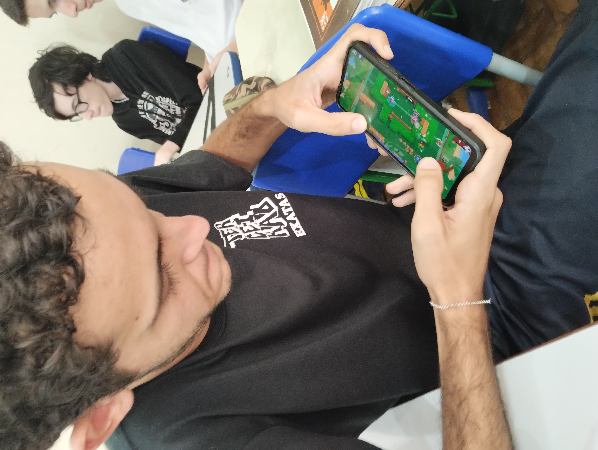

Alunos, desinteressados em estudar em sala de aulas, preferem jogarem em seus celulares desconsiderando quaisqueres avisos ou considerações ao professor que está em aula.
O desinteresse na sala de aula é possível ser observado através do tipo de contéudo dito pelo professor em aula, geralmente os alunos utilizam o celular como uma forma de distração para passar o tempo
Uma outra causa, é o vício em jogos no celular, onde é percebido quando alguém não consegue parar de utilizar o celular para jogar joguinhos online ou offline, preferindo a escolha de prazeres momentaneos
Ao dividir atenção ou totalmente focar no celular, se perde explicações e conteúdos importantes, seja para provas ou atividade avaliativas, tendo então que depender em recuperações ou pedir novamente a explicação.
Ao ficar usando celular em sala de aula, provavelmente receberá broncas ou avisos sobre o uso inadequado do aparelho eletronico, podendo até chamar responsável (caso for de menor), ou é consfiscado o celular.
Embora utilizar o celular em sala possa parecer inocente, se o uso for exagerado, pode-se tornar prejudicial ao aprendizado do estudante, essa utilização do aparelho eletronico em momentos inadequados distrai a mente humana de explicações de conteúdos dificultando na absorção de matérias escolares, e consequentemente,reprovação.